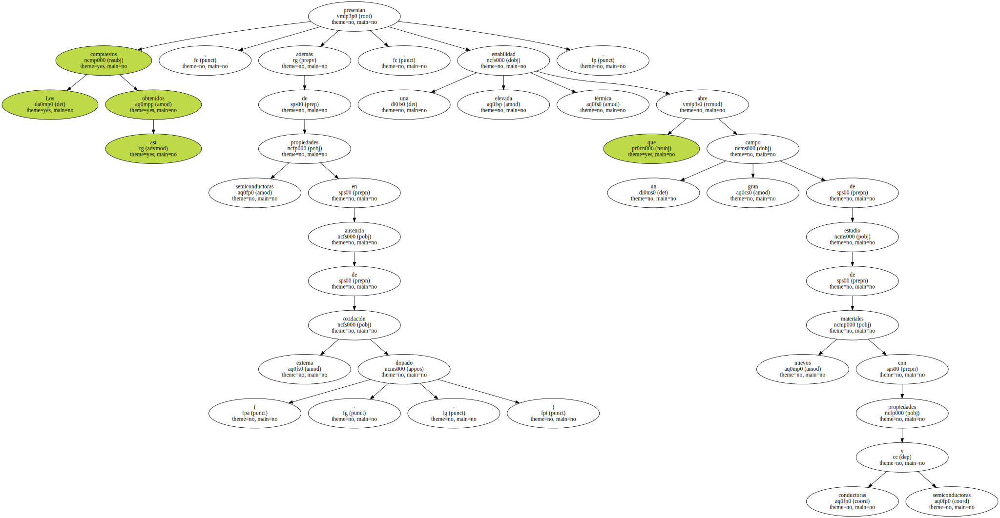
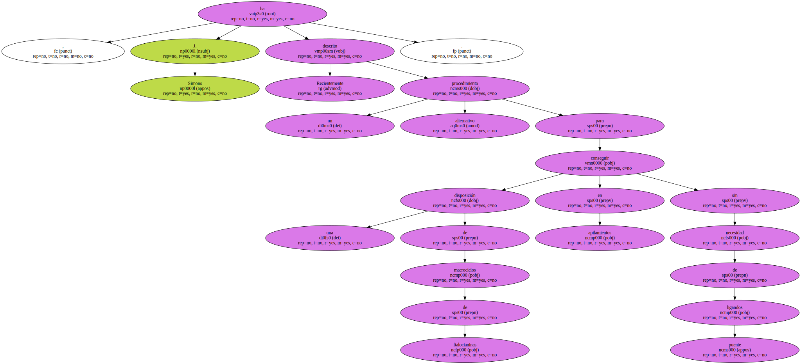
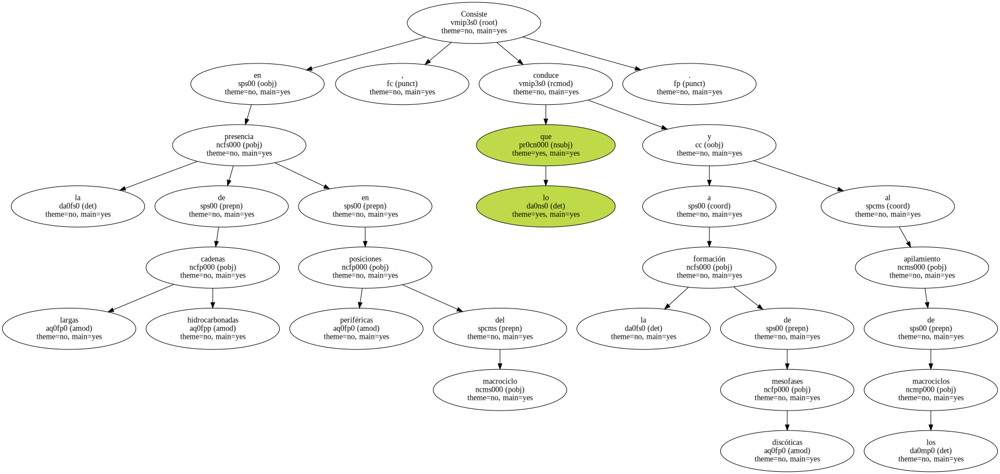
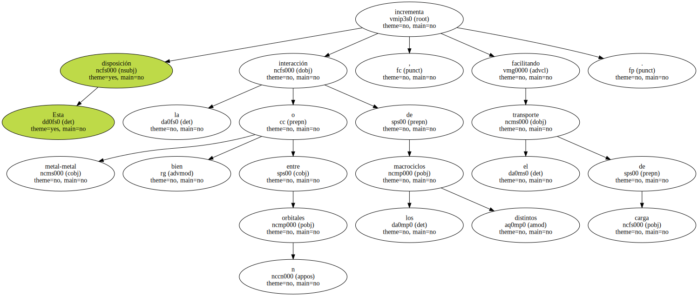
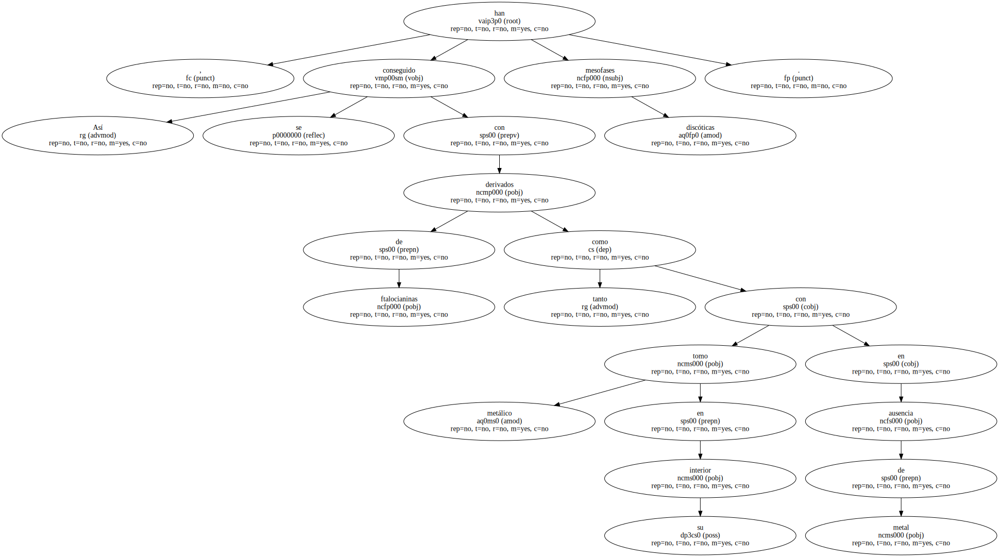
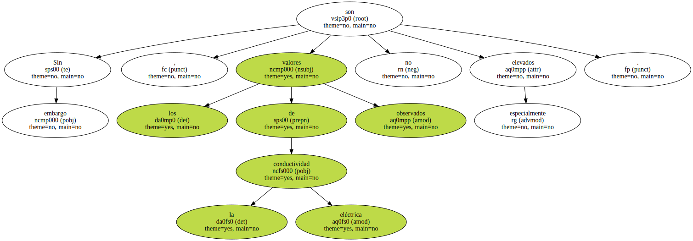
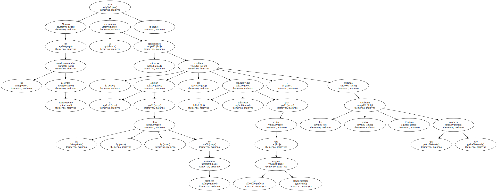
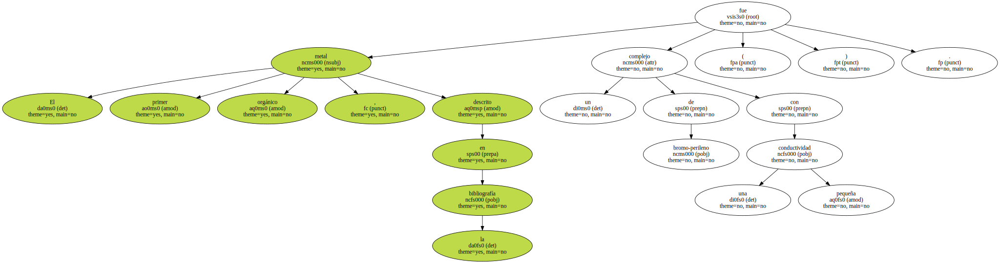
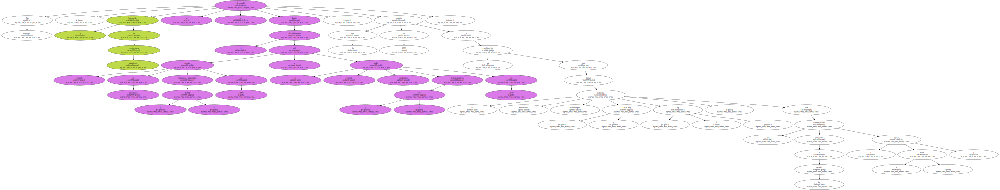
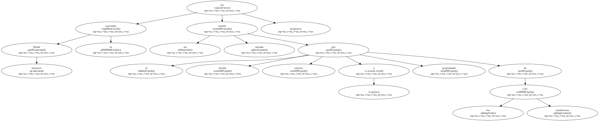

Los compuestos así obtenidos presentan , además de propiedades semiconductoras en ausencia de oxidación externa ( - dopado - ) , una elevada estabilidad térmica que abre un gran campo de estudio de nuevos materiales con propiedades conductoras y semiconductoras.
Recientemente , J. Simons ha descrito un procedimiento alternativo para conseguir una disposición de macrociclos de ftalocianinas en apilamientos sin necesidad de ligandos puente.
Consiste en la presencia de largas cadenas hidrocarbonadas en posiciones periféricas del macrociclo , lo que conduce a la formación de mesofases discóticas y al apilamiento de los macrociclos.
Esta disposición incrementa la interacción metal-metal o bien entre orbitales n de los distintos macrociclos , facilitando el transporte de carga.
Así , se han conseguido mesofases discóticas con derivados de ftalocianinas tanto con tomo metálico en su interior como en ausencia de metal.
Sin embargo , los valores de la conductividad eléctrica observados no son especialmente elevados.
Algunos de los metalomacrociclos anteriormente descritos han encontrado ya aplicaciones prácticas : su adición a los - films - de materiales plásticos les confiere la suficiente conductividad para evitar que se carguen eléctricamente , evitando los serios problemas técnicos que ello conlleva.
El primer metal orgánico , descrito en la bibliografía fue un complejo de bromo-perileno con una pequeña conductividad ( ).
Sin embargo , la búsqueda de conductores orgánicos no se desarrolló hasta el descubrimiento del potente aceptor de electrones tetraciano-p-quinodima ( TCNQ ) en 1960 y el potente dador electrónico tetratiafulvaleno ( TTF ) en 1970 , lo que condujo en 1973 a su combinación para formar el complejo n-molecular dadoraceptor ( TTF-TCNQ ) ( fig. 3 ) , con una conductividad semejante a los metales ( véase la tabla 1 ).
Este descubrimiento clave fue origen de un gran esfuerzo investigador , que provocó la búsqueda de nuevos complejos orgánicos de transferencia de carga ( CTC ) que pudieran igualar o incluso mejorar al TCNQ-TTF.

Desde entonces se ha suscitado un enorme interés por el diseño , síntesis y propiedades de los CTC conductores.
